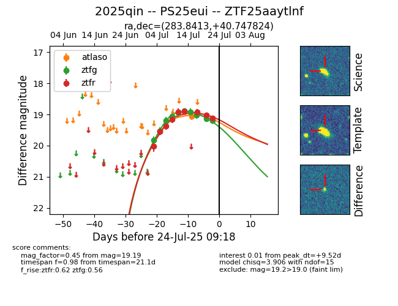

Target ZTF25aaytlnf at 2025-07-24 09:18, see:
FINK: fink-portal.org/ZTF25aaytlnf
Lasair: lasair-ztf.lsst.ac.uk/objects/ZTF25aaytlnf
ALeRCE: alerce.online/object/ZTF25aaytlnf
TNS: wis-tns.org/object/2025qin
YSE: ziggy.ucolick.org/yse/transient_detail/2025qin
alt names
ZTF25aaytlnf (ztf,fink)
2025qin (tns,yse)
PS25eui (panstarrs)
coordinates:
equatorial (ra, dec) = (283.8413,+40.74782)
galactic (l, b) = (70.6980,+16.62350)
photometry
last atlaso=19.07, ztfg=19.19, ztfr=19.11
1 atlaso, 10 ztfg, 9 ztfr detections
